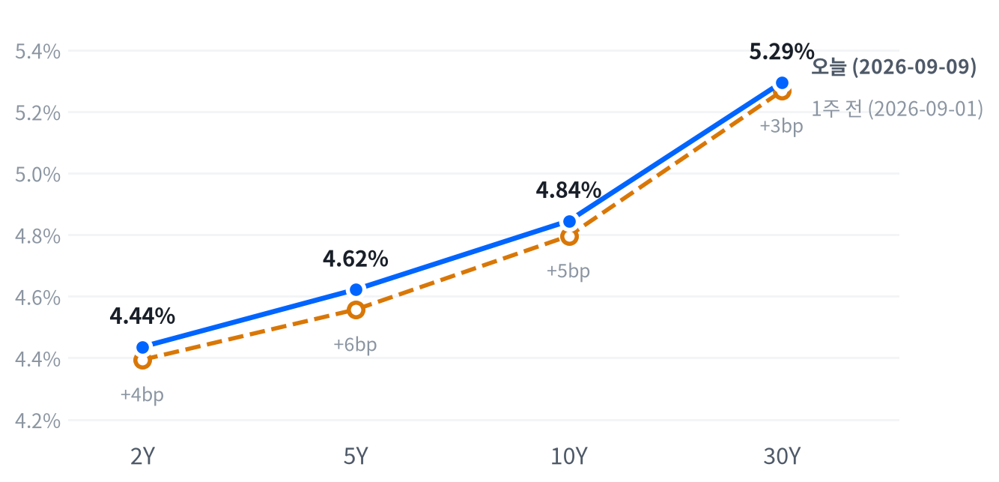

유가 100달러 돌파·금리 상승에 주식 약세, AI 인프라 안에서도 명암
미국 9월 9일 거래일 · 한국 9월 10일 발행 | 가격은 수집 시점의 일간 종가, 장중 경로는 30분 봉 기준
전략 코멘트
오늘 브렌트유가 100달러를 넘어섰고 미국 주식은 하락 마감했다. 국채금리도 올라 채권이 주식 손실을 상쇄하지 못한 하루였다. 러셀의 약세와 버티브 급락은 지수 하락률만으로 보이지 않는 취약한 부분이다.
유가 충격은 기업 비용과 가계 구매력을 동시에 압박한다. 금리까지 오르면 먼 미래의 이익을 높게 평가받던 종목도 부담을 받는다. 다만 마벨과 마이크론은 상승해 AI 투자 기대가 모두 무너졌다고 보기는 어렵다.
유지한다. 2~6주 기준 주식은 중립으로 두고, 채권 만기는 짧게 가져가며 금·에너지와 메모리·AI 인프라의 기존 비중을 지킨다. 오늘 가격 하락만으로 등급을 바꾸기보다 공급 차질과 기업 발주를 구분해 확인한다.
유가 상승이 멈춰도 소형주와 장기채가 계속 밀리면 비용 충격만으로 설명한 판단을 고쳐야 한다. 반대로 공급 우려가 완화되고 금리도 내려가면 지금의 방어적 만기 선택을 다시 검토한다.
오늘의 장
미국장은 아시아의 약세를 이어갔지만, 유럽의 보합 흐름과는 엇갈렸다. 다만 아래 해외 지수는 수집 가능한 9월 8일 종가라 오늘 미국장과 같은 시점의 비교는 아니다. 아시아 안에서는 상해가 올랐고 닛케이·항셍은 내렸다.
유럽도 영국 약세와 유로스톡스 상승으로 갈렸다. 지역별 마감 순서를 구분해야 전날 아시아 약세가 오늘 미국 하락을 예고했다고 오해하지 않는다.
| 지수 | 종가 | 등락 | 기준일 |
|---|---|---|---|
| 닛케이 | 65,269.33 | -1.70% | 2026-09-08 |
| 항셍 | 25,317.18 | -0.38% | 2026-09-08 |
| 상해종합 | 3,940.55 | +0.20% | 2026-09-08 |
| DAX | 26,007.63 | +0.00% | 2026-09-08 |
| FTSE100 | 10,811.70 | -0.10% | 2026-09-08 |
| 유로스톡스50 | 6,413.17 | +0.14% | 2026-09-08 |
| VIX | 16.46 | +4.71% | 2026-09-09 |
해외 지수는 표의 기준일을 따른다. 미국 지수와 하루 시차가 있어 동시 시장 반응으로 읽지 않는다.
장 전부터 하락 압력이 있었다. S&P 선물은 02:00 ET의 7,691에서 08:00 ET의 7,645까지 낮아졌다. 현물은 -0.17% 갭으로 출발했다.
유가가 심리적 경계를 넘었다는 뉴스는 개장 전에 이미 전해졌다. 장중 뒤늦게 등장한 악재로 개장 갭을 설명할 필요가 없는 날이다.
동일가중·시가총액가중 지수 비교는 고르게 내림으로 분류됐다. S&P는 개장 부근의 고점을 회복하지 못했고 오전 하락 뒤 일부 되돌렸다. 나스닥도 오전 저점에서 반등했지만 플러스로 전환할 힘은 부족했다.
러셀은 오후까지 약해져 저점권에 남았다. 대형 지수의 낙폭 축소와 소형주의 회복 실패가 함께 나타났다.
직접 확인되는 공통 재료는 중동 공급 불안과 국채금리 상승이다. 로이터의 개장 보도는 유가 급등을 개장 약세의 배경으로 짚었다. 비용과 자금조달 부담이 큰 기업에 이 조합이 더 불리하다는 해석은 가능하지만, 종목별 매도 주문의 동기를 확인한 것은 아니다.
오늘 약세를 곧바로 경기침체의 확정 신호로 읽기도 어렵다. 경기 전망을 바꿀 만한 새 핵심 경제지표는 없었고 원유는 수요 위축보다 공급 걱정에 반응했다. 주가 하락과 유가 상승이 함께 나왔다는 점에서, 수요가 한꺼번에 무너지는 날과 가격의 조합이 다르다.
동일가중과 시가총액가중 지수 비교에서는 고르게 내림으로 분류됐다. 비슷한 비중으로 묶은 종목군도 약해 일부 초대형주만의 하락으로 보기 어려웠다. 변동성 지수는 올랐지만 최근 가격 분포의 극단으로 뛰지는 않았다.
지수 하락 자체보다 어떤 자산이 완충 역할을 했는지가 더 분명했다. 금과 원유는 상승했고 장기채는 하락했다. 안전자산이라는 같은 이름으로 금과 국채를 묶으면 이날 손익의 차이를 놓치게 된다.
종가를 보는 시각도 나눌 필요가 있다. 미국 주식의 정규장 종료 뒤에도 선물과 외환 거래는 이어진다. 이 보고서의 원유 일간 값과 기사 속 결제가격이 다른 것은 그 관측 시점과 계약 기준의 차이 때문이다.
기사 숫자를 표에 섞지 않고 수집된 일간 값을 일관되게 사용했다.
주식
S&P는 최근 2년 가운데 지금보다 높았던 날이 24일뿐인 자리다. 하루 하락 폭은 최근 움직임에 비해 보통 수준이지만, 높게 올라온 가격을 지켜야 하는 부담은 남아 있다. 나스닥도 장기 분포의 위쪽에 있고 러셀은 단기 이동평균 아래라, 같은 하락률이라도 출발점은 다르다.
| 자산 | 종가 | 전일 대비 |
|---|---|---|
| Nasdaq | 26,253.34 | -0.64% |
| S&P 500 | 7,636.36 | -0.48% |
| Dow | 52,380.66 | -0.77% |
| Russell 2000 | 2,921.23 | -1.32% |
| S&P 500 Growth | 139.33 | -0.35% |
| S&P 500 Value | 234.00 | -0.60% |
성장·가치는 각각 IVW·IVE ETF 가격이며 지수 포인트가 아니다. 나머지 네 행은 지수 종가다.
러셀은 1.32% 하락해 대형 지수보다 약했다. 최근 통상적인 하루 변동보다 큰 움직임으로, 유가 상승에 따른 비용 부담과 금리 상승에 따른 차입 부담이 겹쳤다는 해석이 가격 조합과 맞는다. 다만 이를 소형주 전체의 이익 전망 하향이 확인됐다는 뜻으로 넓혀서는 안 된다.
성장주가 가치주보다 덜 내렸다고 해서 기술주 전체가 올랐다는 뜻은 아니다. 성장 ETF 역시 하락했고 나스닥도 음봉을 남겼다. 상대적으로 덜 손해 본 자산과 절대 수익을 낸 자산을 구분해야 한다.
에너지의 상승과 일부 반도체의 강세는 서로 다른 이유로 지수 안에서 버팀목이 됐다.
| 자산 | 종가 | 전일 대비 |
|---|---|---|
| Technology | 187.87 | +0.00% |
| Energy | 65.31 | +0.83% |
| Communication Services | 110.83 | -0.62% |
| Consumer Discretionary | 112.46 | -1.34% |
| Utilities | 42.94 | -1.17% |
| Consumer Staples | 83.05 | -1.15% |
| Health Care | 166.58 | -0.33% |
| Industrials | 171.79 | -1.51% |
| Financials | 57.06 | -0.42% |
| Materials | 51.39 | -1.06% |
| Real Estate | 43.41 | -1.12% |
섹터는 대표 ETF의 종가·등락률이다. 기술주는 소수점 둘째 자리에서 보합이며, 에너지만 플러스다.
업종별로는 산업재와 경기소비재가 약했고 필수소비재도 피난처가 되지 못했다. 유가 상승이 운송과 생산 비용을 건드리는 가운데, 생활비 부담이 소비 여력을 줄일 수 있다는 우려가 겹친 모습이다. 이 연결은 업종 가격으로부터 읽은 해석이며 당일 소비 실적이 새로 발표된 것은 아니다.
유틸리티와 부동산도 하락했다. 현금흐름이 비교적 안정적인 업종이라도 국채금리가 높아지면 배당의 상대 매력이 약해질 수 있다. 따라서 경기 방어 성격만으로 금리 충격까지 피할 수는 없다.
오늘 방어 업종의 약세는 주식 내부 순환매만으로 손실을 모두 피하기 어려웠음을 보여준다.
장중 표본에서 S&P의 오전 저점은 7,624였고 이후 종가는 그보다 높은 곳에 형성됐다. 나스닥 역시 오전 저점을 벗어났으나 개장 무렵 고점에는 못 미쳤다. 오전 매도가 오후 내내 가속한 것은 아니지만, 저가 매수가 전일 종가까지 시장을 끌어올리지도 못했다.
러셀은 오후 늦게 저점을 만들었다는 점이 다르다. 대형주가 낙폭을 줄이는 동안 소형주에 같은 회복이 나타나지 않았다. 이런 장에서는 지수의 마지막 반등만 보고 시장 전체가 돌아섰다고 판단하기 쉽다.
반등의 존재와 반등에 참여한 자산의 범위는 따로 확인해야 한다.
S&P는 50일 평균을 아직 웃돌지만 20일 평균 아래다. 최근 상승 속도가 둔해졌어도 중기 기준선이 완전히 무너졌다고 말할 단계는 아니다. 러셀은 두 평균 아래에 있어 단기 반등이 나와도 회복 확인에 더 많은 시간이 필요하다.
이동평균은 원인이 아니라 가격 상태를 정리하는 기준이다.
기술주의 보합에는 서로 다른 종목 움직임이 합쳐져 있다. 마벨의 상승과 엔비디아의 하락이 같은 날 나타났고, AI 설비 관련주에서도 냉각과 광통신이 갈렸다. 큰 업종 하나의 등락률을 개별 사업의 수요 판단으로 바로 옮기면 이런 차이가 사라진다.
아래 기간별 수익률은 하루 결과가 누적 추세와 같은 방향인지 확인하는 표다. 단기 급락 뒤에도 월간 성과가 강할 수 있고, 하루 반등만으로 월간 손실이 회복되지는 않는다. 특히 이번처럼 테마 안에서 종목별 차이가 큰 날은 기간을 고정해 비교해야 추세와 되돌림을 혼동하지 않는다.
섹터 기간별 수익률
섹터 기간별 수익률
채권
10년 금리는 최근 가격 분포의 최상단 부근에 머물렀다. 높은 금리는 새로 사는 투자자에게 이자 수익을 제공하지만 기존 보유자에게는 가격 손실을 뜻한다. 오늘도 모든 만기의 금리가 올랐고, 중간 만기가 더 크게 움직여 장기물만의 수급 문제로 설명하기 어려웠다.
| 만기 | 9/9 금리 | 전일 변화 | 9/1 금리 | 주간 변화 |
|---|---|---|---|---|
| 2Y | 4.436% | +3.8bp | 4.394% | +4.2bp |
| 5Y | 4.622% | +4.9bp | 4.557% | +6.5bp |
| 10Y | 4.845% | +4.1bp | 4.796% | +4.9bp |
| 30Y | 5.295% | +3.1bp | 5.267% | +2.8bp |
출처: Naver Treasury. 네 만기 모두 9월 9일 17:05 ET 미국 현금시장 종가. 주간 비교 기준일은 수집된 9월 1일이다. 1bp는 0.01%포인트다.
2년과 10년의 금리차는 소폭 넓어졌지만 5년과 30년의 차이는 좁아졌다. 수익률곡선 전체가 같은 모양으로 움직인 날이 아니다. 중간 만기의 상승 폭이 더 컸기 때문에 어느 두 만기를 비교하는지에 따라 기울기 설명이 달라진다.
단순히 장단기 금리차가 확대됐다고 쓰면 절반만 맞는다.
주간으로도 중간 만기의 금리 상승이 두드러졌다. 주간 2년·10년 곡선은 가팔라졌고 5년·30년 곡선은 평평해졌다. 이 구간은 당장의 정책금리뿐 아니라 앞으로의 경기와 물가 경로를 함께 반영한다.
새 경제지표가 오늘 없었더라도 원유 공급 위험이 다음 물가 발표와 정책 판단을 보는 눈높이를 바꿀 수 있다. 현재 금리와 향후 인상 전망은 같은 숫자가 아니다.

로이터의 장중 채권 보도는 재무부의 장기채 매입 확대가 일부 시장 기대에는 못 미쳤다고 전했다. 매입 규모가 늘었다는 사실만으로 채권 가격 상승을 예상하기 어려운 이유다. 시장은 발표의 절대 크기와 함께 이미 기대했던 규모와의 차이를 가격에 반영한다.
금리 분해 자료는 시차를 갖는다. 같은 날짜로 맞출 수 있는 9월 8일 자료에서는 실질금리보다 기대인플레이션이 명목금리 상승을 설명했다. 이를 오늘 금리 상승분의 확정 분해로 가져오지는 않는다.
오늘 현금시장 금리와 전날의 실질금리를 빼면 관측 시각이 다른 값끼리 계산한다.
| 보조 지표 | 수준 | 기준일 |
|---|---|---|
| 10년 실질금리 | 2.43% | 2026-09-08 |
| 5년 기대인플레 | 2.41% | 2026-09-09 |
| 10년 기대인플레 | 2.37% | 2026-09-09 |
| 10년 기간프리미엄(장기 보유 추가 보상) | 0.89% | 2026-09-04 |
| 하이일드 스프레드 | 2.67% | 2026-09-08 |
| 투자등급 스프레드 | 0.81% | 2026-09-08 |
기간프리미엄(장기간 돈을 묶는 데 요구하는 추가 보상)도 금리의 일부다. 이 추정치도 당일 실시간 가격은 아니므로 유가 뉴스 직후 올랐다고 단정할 수 없다. 실질금리·기대물가·추가 보상을 구분하면, 높은 장기금리를 모두 연준 인상 전망 하나로 설명하는 오류를 줄일 수 있다.
회사채의 추가 금리도 아직 전날 값이다. 그 자료에서 신용위험이 급격히 확대됐다고 볼 근거는 없지만, 오늘 주가 약세 뒤에도 그대로였다고 확인할 수는 없다. 국채금리 상승과 신용 가산금리 확대는 기업 자금조달에 다른 경로로 작용하므로 다음 관측에서도 구분해 볼 필요가 있다.
9월 8일 기준 5년 뒤 5년 명목금리는 5.03%다. 이는 미래 특정 구간의 금리를 현재 곡선으로 환산한 값이며 연준의 확정 예측이 아니다. 당일 현금시장 종가보다 하루 늦은 보조 자료로 구분한다.
FX
달러지수는 98.78로 최근 가격 분포의 중간 부근인데 원·달러는 매우 낮은 쪽에 있다. 같은 달러 약세라도 원화와 주요 통화 묶음에서 누적된 폭은 다르다. 오늘 달러지수의 움직임은 평소보다 작았으며, 미국 금리 상승이 곧바로 전면적인 달러 강세로 이어지지는 않았다.
| 자산 | 종가 | 전일 대비 |
|---|---|---|
| DXY | 98.78 | -0.06% |
| USD/KRW | 1,339.21 | -0.32% |
| USD/JPY | 153.48 | -0.25% |
| EUR/USD | 1.16 | -0.00% |
DXY는 지수, USD/KRW는 달러당 원, USD/JPY는 달러당 엔, EUR/USD는 유로당 달러다.
원·달러 하락은 원화 강세이고 달러·엔 하락은 엔화 강세다. 유로·달러는 반대로 상승할 때 유로 강세를 뜻한다. 오늘 유로는 거의 제자리였으므로, 달러지수의 소폭 하락을 모든 상대 통화의 동반 상승으로 설명할 수 없다.
환율 표의 분모와 분자를 먼저 맞춰 읽어야 한다.
달러·엔의 장중 표본은 아침에 낮아졌다가 뒤에 일부 반등한 경로를 보였다. 미국 주식 개장 전과 정규장 이후를 포함하는 거래이므로 주가지수의 고점·저점 시간과 그대로 겹쳐서는 안 된다. 일간 종가와 마지막 장중 봉의 값이 다른 것도 환율의 일별 집계 시점이 다르기 때문이다.
미국 금리 상승에도 달러가 뚜렷하게 오르지 않았다는 점은 중요하다. 금리 차 외에 상대국 정책 기대와 위험 회피 수요가 함께 작용할 수 있기 때문이다. 다만 오늘 환율 움직임만으로 어느 요인이 얼마를 설명했는지는 확인되지 않는다.
특정 중앙은행의 새 발언을 찾지 못한 상태에서 원인으로 끼워 넣지 않았다.
원화의 낮은 환율 수준은 국내 투자자의 해외자산 환산수익에도 영향을 준다. 달러 표시 자산이 올라도 원화가 강해지면 원화 수익은 줄어들 수 있다. 반대로 미국 주식 하락률에 환율 하락률을 단순히 더한 값이 실제 계좌 손익은 아니다.
보유 시점과 환헤지 여부가 먼저 정해져야 한다.
오늘은 주식 약세를 따라 달러가 급등하는 전형적인 현금 선호가 강하게 나타나지 않았다. 금과 원유는 올랐고 엔화도 달러 대비 강했다. 자금이 하나의 안전자산으로 몰렸다기보다 각 시장이 서로 다른 부담을 반영한 모습이다.
이 차이가 지속되는지는 다음 미국 물가 발표 뒤 다시 확인할 수 있다.
원자재
WTI는 최근 504거래일 가운데 이보다 높았던 날이 25일뿐인 높은 가격대다. 금도 분포의 위쪽에 있지만 원유만큼 극단적인 위치는 아니다. 오늘 원유의 퍼센트 상승 폭은 커 보여도 최근의 큰 변동을 기준으로 하면 보통 범위다.
높은 가격 수준과 이례적인 하루 변동은 서로 다른 판단이다.
| 자산 | 종가 | 전일 대비 |
|---|---|---|
| WTI | 97.06 | +4.33% |
| Brent | 102.05 | +4.22% |
| Natural Gas | 2.81 | -3.81% |
| Gold | 4,446.40 | +1.19% |
원유·금·천연가스는 선물 일간 수집값이다. 기사에 쓰인 결제가격과 다를 수 있으며, 천연가스는 달러/MMBtu, 금은 달러/트로이온스다.
원유 상승의 확인된 배경은 중동에서의 공격과 공급 경로 불안이다. 로이터는 선박 공격과 역내 긴장 고조가 공급 우려를 키웠다고 보도했다. 수요가 갑자기 늘었다는 증거와는 구분해야 한다.
공급 충격으로 오른 유가는 생산자의 매출을 높일 수 있지만 소비자와 수입국에는 비용이 된다.
장중 WTI는 낮은 가격에서 출발해 미국 거래시간 동안 올라갔고 주식시장 종료 뒤에도 높은 수준을 유지했다. 따라서 주식 종가 때 시장이 본 유가와 이 표의 최종 수집값은 완전히 같지 않다. 미국장 하락 원인을 설명할 때는 이미 개장 전에 확인된 공급 뉴스와 상승 흐름에 근거를 둔다.
브렌트는 WTI보다 높게 거래됐다. 해상 운송과 국제 공급 위험에 더 직접 노출되는 기준유라는 차이는 있으나, 가격차 전부를 이번 공격 때문이라고 분해할 근거는 없다. 브렌트의 세 자릿수 진입은 심리적 의미가 있지만 그 숫자 자체가 경제의 임계점은 아니다.
기업과 가계가 부담하는 비용은 높은 가격이 얼마나 오래 지속되는지에 달려 있다. 하루 돌파를 장기 물가 재가속으로 확정하기보다 실제 운송과 공급 차질의 지속 여부를 함께 봐야 한다.
천연가스는 원유와 반대로 내렸다. 두 상품은 같은 에너지로 묶이지만 수송 구조와 지역 수급이 다르다. 원유 공급 뉴스가 천연가스 가격까지 같은 방향으로 밀어야 할 이유는 없다.
이날 하락의 개별 수급 원인은 추가 확인되지 않아 날씨나 재고 발표를 임의로 원인에 붙이지 않는다.
금은 국채금리가 오르는 날에도 상승했다. 보유 이자가 없는 금에는 높은 금리가 부담이지만, 지정학적 불확실성과 달러 흐름은 다른 방향으로 작용할 수 있다. 오늘의 동반 상승은 금리만으로 금을 설명하기 어려웠다는 증거다.
이를 중앙은행 매입 증가가 확인됐다는 주장으로 바꾸지는 않는다.
금의 장중 고점은 미국 주식 개장 무렵에 형성됐고 이후 상승 폭을 일부 반납했다. 종가가 올랐다는 사실과 하루 내내 매수세가 강해졌다는 이야기는 다르다. 원유가 뒤에도 높은 가격을 유지한 경로와 비교하면, 두 자산을 같은 지정학 뉴스의 복사판으로 볼 수 없음을 알 수 있다.
매크로 논리
매크로 레짐, 즉 성장과 물가를 함께 본 국면은 연착륙을 유지한다. 신규 핵심 지표가 없는 날이라 기존 관측을 승계한다. 여기서 연착륙은 성장과 물가의 둔화 조합을 가리키며, 경기침체가 없다고 보증하는 표현은 아니다.
성장 점수 -0.380 · 물가 점수 -0.391 | 고용 +0.068 · 활동 -0.361 · 소비 -0.847 · 물가 -0.391. 방향은 최근 추세를 함께 반영해 전월 대비 증감과 다를 수 있다.
고용은 급격한 붕괴를 보이지 않지만 소비와 활동의 추세는 약하다. 아래 실업률이 전월과 같고 소매판매가 감소한 조합이 그 차이를 보여준다. 월간 발표의 기준 기간과 오늘의 시장 거래일은 다르다.
최신 주가를 설명하기 위해 지난달 지표를 오늘 나온 발표처럼 다루지 않는다.
고용
| 지표 | 최근 | 이전 | 기준 기간 시작일 |
|---|---|---|---|
| 구인 건수 (천 명/건) | 7,271.00 | 7,182.00 | 2026-07-01 |
| 신규 실업수당 | 206,000.00 | 204,000.00 | 2026-08-29 |
| 신규 청구 4주 평균 | 207,250.00 | 205,750.00 | 2026-08-29 |
| 계속 실업수당 | 1,779,000.00 | 1,771,000.00 | 2026-08-22 |
| 비농업고용 증감 (천 명/건) | 162.00 | 21.00 | 2026-08-01 |
| 실업률 | 4.10% | 4.10% | 2026-08-01 |
| 시간당 임금 전월비 | 0.27% | 0.16% | 2026-08-01 |
활동
| 지표 | 최근 | 이전 | 기준 기간 시작일 |
|---|---|---|---|
| 산업생산 전월비 | 0.20% | 0.27% | 2026-07-01 |
| 내구재 주문 전월비 | 1.08% | 0.58% | 2026-07-01 |
| 신규주택 판매 (천 명/건) | 607.00 | 678.00 | 2026-07-01 |
| 기존주택 판매 | 4,060,000.00 | 4,130,000.00 | 2026-07-01 |
| 실질 GDP 전기비 연율 | 1.50% | 2.10% | 2026-04-01 |
소비
| 지표 | 최근 | 이전 | 기준 기간 시작일 |
|---|---|---|---|
| 소매판매 전월비 | -0.58% | 0.25% | 2026-07-01 |
| 미시간 소비심리 | 55.20 | 49.50 | 2026-07-01 |
물가
| 지표 | 최근 | 이전 | 기준 기간 시작일 |
|---|---|---|---|
| CPI 전년비 | 3.54% | 3.73% | 2026-07-01 |
| CPI 전월비 | 0.07% | -0.42% | 2026-07-01 |
| 근원 CPI 전년비 | 2.79% | 2.81% | 2026-07-01 |
| 근원 CPI 전월비 | 0.22% | -0.02% | 2026-07-01 |
| PPI 전월비 | -0.03% | -0.11% | 2026-07-01 |
| PCE 물가 전년비 | 3.70% | 3.72% | 2026-07-01 |
| 근원 PCE 전년비 | 3.34% | 3.34% | 2026-07-01 |
| 미시간 1년 기대물가 | 4.20% | 4.60% | 2026-07-01 |
FRED 수집값. 날짜는 발표일이 아닌 통계 기준 기간이다. 주택 판매는 연율 수준, GDP는 2분기 전기비 연율. 컨센서스는 확인되지 않아 싣지 않았다.
물가의 둔화 방향과 유가의 당일 급등은 함께 존재할 수 있다. 공식 통계는 이미 지난 기간을 측정하고 원자재 시장은 앞으로의 공급 위험을 거래하기 때문이다. 에너지 충격이 근원 서비스 가격과 임금으로 번지는지를 보기 전에는, 오늘 유가만으로 네 축의 판단을 모두 바꾸지 않는다.
정책은 인상 위험이 더 큰 기존 경로를 유지한다. 참고 확률 66%는 이전 판단에서 승계한 값으로 오늘 확인한 실시간 CME FedWatch 값이 아니다. 새로운 시장 확률을 확보하지 못했으므로 확률이 올랐다거나 내려갔다고 쓰지 않는다.
오늘의 금리 상승은 그 공백을 대신하는 정확한 확률 수치가 될 수 없다.
다음 분기점은 9월 11일 소비자물가 발표다. 헤드라인 물가에서 에너지 영향이 커졌는지와 근원물가의 흐름을 나눠 볼 필요가 있다. 월간 수치가 낮아져도 과거 비교 기준 때문에 전년비가 다르게 움직일 수 있어, 어느 변화율인지 먼저 구분한다.
연준 일정상 정책 결정은 9월 16일이다. 물가가 예상보다 완만하면 인상 우위 판단을 다시 열고, 근원 부분까지 가속하면 현재 경로의 근거가 강해진다. 금리 결정뿐 아니라 이후 설명이 성장 둔화를 얼마나 중시하는지도 확인한다.
아직 열리지 않은 회의의 발언을 미리 인용하지 않는다.
자산 방향은 향후 3~6개월의 경제 경로다. 물가 둔화가 채권과 금을 돕고 달러에는 부담이 되는 경로를 유지한다. 반면 에너지는 공급 뉴스의 단기 영향이 커 구조적 방향을 바꾸지 않는다.
AI 관련 투자 수요가 이어져도 높은 할인율이 주가에 미치는 부담까지 사라지는 것은 아니다.
채권의 구조적 우호와 2~6주 만기를 짧게 두는 판단은 기간이 다르다. 물가 둔화가 결국 채권을 도울 수 있어도 그 전에 유가와 장기채 수급이 가격을 더 밀 수 있다. 따라서 높은 이자 수익만 보고 긴 만기를 즉시 늘리지는 않는다.
금리 압력이 실제로 진정되면 단기 판단부터 다시 검토한다.
멀티에셋 매니저 전략
투자 기간은 2~6주다. 오늘 모든 자산의 기존 등급을 유지한다. 매일 새로운 등급을 붙이는 대신 이전에 정한 조건이 충족됐는지 확인했다.
아래 유지 일수는 거래일 기준이며, 시장이 크게 움직여도 조건에 닿지 않으면 그 사실과 위험을 함께 적는다.
| 자산 | 등급 | 시작일 | 유지 일수 | 판단 근거 | 다음 분기점 |
|---|---|---|---|---|---|
| 주식 | 중립 | 2026-09-01 | 7영업일 | S&P 500의 50일선 상회폭은 0.45%로 확대 조건에 못 미친다. VIX도 축소 기준 아래라 주식 중립을 유지한다. | S&P의 50일선 상회폭 3% 초과 또는 VIX 22 초과 |
| 채권 | 숏 바이어스 | 2026-08-14 | 19영업일 | 30년 금리는 5.295%이며 주간 5년·30년 금리차는 -3.7bp 변했다. 만기를 짧게 두고 중간 만기를 중심으로 보유한다. | 30년 5.4% 초과·5.05% 미만 또는 주간 5s30s +15bp 초과 |
| 달러 | 달러 소폭 숏 | 2026-08-14 | 19영업일 | 달러지수의 20일 변화는 -1.04%다. 약세가 이어지지만 추가 확대 조건에는 못 미쳐 기존 달러 소폭 숏을 유지한다. | DXY 20일 -3% 미만 또는 지수 101 초과 |
| 에너지 | 소폭확대 | 2026-09-01 | 7영업일 | WTI 5일 수익률은 +7.57%로 확대와 축소 기준 사이에 있다. 이미 보유한 비중을 유지하며 공급 정상화 여부를 확인한다. | WTI 5일 +20% 초과 또는 +3% 미만 |
| 귀금속 | 소폭확대 | 2026-09-01 | 7영업일 | 금 20일 수익률은 +1.42%, 5일 수익률은 +2.23%다. 추가 확대나 축소 조건 없이 소폭확대를 유지한다. | 금 20일 +15% 초과, 5일 -8% 미만 또는 DXY 101 초과 |
| 메모리 | OW | 2026-09-04 | 4영업일 | 메모리의 20일 초과수익은 +13.35%포인트로 양수다. 기존 OW를 유지하며 실제 판매가격과 수요 변화가 확인되는지 점검한다. | 20일 초과수익 0%포인트 미만 또는 판매가격 하락 확인 |
| AI 인프라 | OW | 2026-09-08 | 2영업일 | AI 인프라 5일 초과수익은 +9.06%포인트다. 어제 높인 OW를 유지하되 버티브 급락과 광통신 강세를 구분해 점검한다. | 5일 초과수익 0%포인트 미만 또는 투자·발주 축소 확인 |
주식은 중립을 유지하지만 모든 종목을 같은 비중으로 사자는 뜻은 아니다. 소형주의 회복 실패를 확인한 만큼 단순한 낙폭만으로 경기 민감 종목을 늘릴 근거는 약하다. 대형주에서도 금리 상승을 견딜 이익과 현금흐름이 있는지 구분한다.
지수 등급과 개별 종목 선택은 서로 다른 결정이다.
채권은 숏 바이어스와 벨리 OW를 유지한다. 이는 만기 위험을 낮추고 중간 만기를 상대적으로 더 보유한다는 뜻이다. 장기채를 무조건 공매도하자는 지시가 아니며, 모의 포트폴리오에서도 장기물 비중을 낮추고 단기물을 높여 구현한다.
가격이 내렸다는 이유만으로 긴 만기를 더 담지 않는다.
달러 소폭 숏은 기존 약세 경로를 유지하는 판단이다. 미국 금리 상승에 달러가 반응하지 않은 하루만으로 이 판단을 강화하지는 않는다. 향후 인상 기대가 더 커지면서 달러도 함께 오르면 약세 논리가 약해질 수 있다.
엔화와 원화의 움직임을 달러지수와 동일한 거래로 취급하지 않는다.
에너지는 소폭확대를 유지한다. 오늘의 상승이 이미 있는 공급 위험을 반영한 것이라면, 같은 뉴스를 이유로 매일 비중을 올리는 행동은 피해야 한다. 통항 정상화가 확인되면 가격 상승의 근거가 약해진다.
반대로 공급 손실이 지속되면 높은 가격이 기업 비용과 정책에 미치는 영향까지 점검한다.
귀금속은 금을 중심으로 소폭확대를 유지한다. 금리가 오르는 날에도 금이 올랐다는 사실은 분산의 효용을 보여줬지만 매번 같은 결과를 보장하지 않는다. 달러까지 강해지면 금 보유 비용과 환율이 함께 부담이 될 수 있다.
원유와 금을 같은 뉴스에 반응하는 하나의 포지션으로 간주하지 않는다.
메모리는 OW, 즉 기준보다 많은 비중을 유지한다. 미국 메모리·저장장치 바스켓의 상대 성과가 유지 조건을 충족하기 때문이다. 한국 종목의 상승은 보조 관찰이며 미국 바스켓 수익에 직접 합산하지 않는다.
주가 강세를 실제 D램 판매가격 상승의 증거로 바꾸지 않고 기업 발표로 따로 확인한다.
AI 인프라도 어제 올린 OW를 유지한다. 버티브의 큰 하락은 무시할 수 없지만 바스켓의 상대 성과는 아직 축소 기준 위에 있다. 전력·냉각 기업의 발주 취소나 자금조달 악화가 확인되면 가격 조건과 별도로 다시 판단한다.
광통신 종목이 올랐다는 이유로 냉각 종목의 위험을 덮지는 않는다.
위험은 세 갈래다. 유가 충격이 소비와 기업 마진을 동시에 해칠 수 있고, 높은 금리가 주식과 채권을 함께 누를 수 있다. AI 투자 수요가 유지돼도 개별 기업의 가격 부담과 주문 시점 때문에 수익률이 갈릴 수 있다.
다음 점검에서는 지수 방향뿐 아니라 이 경로가 실제 데이터로 확인됐는지를 본다.
모의 포트폴리오
2026년 8월 14일 설정한 모의 운용이다. 벤치마크는 모든 등급을 중립으로 놓고 같은 상품으로 구성한다. 수수료·세금·체결 오차를 반영한 실계좌 성과가 아니며 원유 ETF는 현물 원유와 수익률이 다를 수 있다.
비중 조정 한 칸의 위험 예산은 0.75%다. 최근 614거래일의 가격 변동을 기준으로 상품별 조정 폭을 달리했다. 중립 구성에서 주식 관련 위험 몫은 66.1%다.
이는 비중과 개별 변동폭을 곱해 비교한 설계값이며 상관관계까지 반영한 실제 손실 기여도는 아니다.
9월 8일 정한 등급을 적용했다. 오늘 바뀐 등급은 다음 거래일 종가부터 반영되므로 당일 종가를 보고 그날 수익을 소급해 얻지 않는다.
설정 이후 수익률은 -0.408%, 벤치마크 대비 -0.191%포인트다. 8월 28일 결측을 포함하는 설정일~현재의 기록으로, 연속된 짧은 기간의 검증 결과로 읽지 않는다. 표본이 짧아 장기 성과 능력을 평가할 수는 없다.
| 기간 | 포트폴리오 | 중립 기준 | 차이 |
|---|---|---|---|
| 하루 | +0.023% | -0.121% | +0.143%p |
| 9월 1일~9월 9일 | +1.339% | +1.011% | +0.328%p |
| 설정 이후 | -0.408% | -0.217% | -0.191%p |
| 자산 | 비중 | 중립 대비 |
|---|---|---|
| 주식 코어 | 35.50% | -3.50%p |
| 메모리 | 5.25% | +1.75%p |
| AI 인프라 | 5.25% | +1.75%p |
| 채권 장기(20Y+) | 8.40% | -5.60%p |
| 채권 단기(1-3Y) | 19.60% | +5.60%p |
| 귀금속 | 9.75% | +3.25%p |
| 에너지(WTI) | 6.00% | +2.00%p |
| 달러 약세 | 7.25% | +7.25%p |
| 현금성 | 3.00% | -12.50%p |
에너지와 금의 이익이 오늘은 주식과 채권의 손실을 상쇄했다. 기준 포트폴리오보다 좋은 결과였지만 설정 이후로는 아직 뒤처져 있다. 하루의 완충 효과와 누적 성과를 구분해야 현재 구성이 언제나 우월하다는 결론으로 넘어가지 않는다.
주목 섹터·종목
마벨은 데이터센터 연결 기술을, 마이크론은 메모리 수요의 지속성을 살필 종목이다. 버티브는 냉각 수요 자체와 주가 조정의 원인을 나눠 확인할 필요가 있다. 같은 AI 투자에 노출돼도 제품과 고객의 발주 시점이 달라 종목을 서로 대체재로 취급하지 않는다.
메모리·DRAM
| 자산 | 종가 | 전일 대비 |
|---|---|---|
| Micron | 1,027.77 | +2.75% |
| Western Digital | 482.28 | +1.04% |
| Seagate | 885.92 | -2.04% |
| Nvidia | 223.67 | -0.91% |
| Samsung Elec | 269,500.00 | +0.00% |
| SK hynix | 1,856,000.00 | +3.51% |
삼성전자·SK하이닉스는 미국장보다 먼저 끝난 9월 9일 한국장, 원화 종가. 나머지는 미국장 달러 종가. 엔비디아는 메모리 생산업체가 아닌 수요 연관 비교 종목이다.
마이크론과 웨스턴디지털은 올랐지만 시게이트는 내렸다. 메모리·저장장치 관련주가 함께 움직인 하루는 아니었다. 한국장에서도 삼성전자는 보합, SK하이닉스는 상승으로 차이가 났다.
시차가 있는 한국 종가를 미국장 뉴스에 대한 반응이라고 설명하지 않는다.
이번 조사에서 당일 상승을 직접 설명할 새로운 메모리 판매가격 공시는 확보하지 못했다. 따라서 HBM 수요나 D램 가격 상승을 오늘 주가의 확정 원인으로 붙이지 않는다. 주가의 상대 강세는 확인된 사실이고, 실제 주문과 판매단가가 이를 뒷받침하는지는 다음 기업 발표에서 확인할 항목이다.
AI 인프라
| 종목 | 분야 | 종가 | 전일 대비 |
|---|---|---|---|
| Marvell | 연결·주문형 반도체 | 235.01 | +4.26% |
| Coherent | 광학·레이저 | 303.48 | +0.53% |
| Lumentum | 광통신 | 988.98 | +1.07% |
| GE Vernova | 발전·전력망 | 951.04 | -2.09% |
| Vertiv | 전력·냉각 | 262.89 | -9.61% |
마벨의 9월 9일 발표는 AI Infra Summit에서 데이터센터 연결·메모리 기술을 선보인다는 내용이다. 데이터 이동과 연결 효율을 강조한 당일 사업 재료는 확인된다. 다만 제품 전시 계획은 신규 수주나 매출 전망 상향과 다르므로 주가 상승 폭을 그 발표 하나로 설명하지 않는다.
코히런트와 루멘텀은 올랐지만 GE버노바와 버티브는 내렸다. 특히 버티브의 -9.61%는 바스켓 평균만 보면 놓치기 쉬운 위험이다. 당일 급락을 직접 설명할 회사 공시는 확인하지 못했으므로 차익실현이나 수주 취소를 사실로 단정하지 않는다.
냉각 수요 전망과 현재 주가가 부담하는 기대를 따로 점검한다.